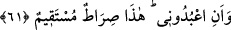
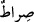
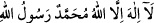

mücrim/günahkar olanlara da özür beyan edip nasihat eden kimse gibi hitab etmiş ve:
“Ben size and vermedim mi? Size nasihat etmedim mi? Şeytanın habisliğini/kötülüğünü,
size düşmanlığını ve sizin onun gibi lânetlenmiş ve alçak birine tapmaktan üstün ve
şerefli olduğunuzu size haber vermedim mi?” buyurmuştur.
61. “Ve bana kulluk edin, doğru yol budur.” demedim mi?
“Ve bana kulluk edin” Çünkü sizin gibisi benim gibisine ibâdet etmeye müstehaktır.
Çünkü güçlü, mutlak gâlib ve bağışlayıcı olan benim. Sizi kendi zâtım için yarattım.
Diğer mahlûkâtı da sizin için yarattım. Mukarreb meleklerimi ve ikrâma mazhar olmuş
kullarımı size secde ettirerek sizi izzet ve kerem sâhibi kıldım. Öyleyse ibâdette beni
birleyin, tek bana ibâdet edin. Allah’a ibâdete hiç kimseyi ortak koşmayın.
“Şeytana tapmayın” yasağının “bana kulluk edin” emrinden önce getirilmesi,
tahliyenin (hı ile boşaltıp temizlemenin) tahliyeden (hâ ile süsleyip bezemekten) önce
gelmesi gerektiği içindir. Bir de “bana kulluk edin” emrinin “doğru yol budur” sözü
ile bitişik olması içindir.
“Doğru yol budur” sözü tevhid ve İslam’dan ibâret olan Allah Teâlâ’ya ibâdete
işârettir. “İşte bana varan doğru yol budur.” (el-Hicr, 15/41) âyeti ile işâret edilen ve
“İblis dedi ki: “And içerim ki, ben de onları saptırmak için senin doğru yolunun
üstüne oturacağım.” (el-A’râf, 7/16) âyeti ile kasdedilen de odur.
“__WORD__ kelimesinin nekre oluşu şereflendirmek içindir.
Baklî der ki: “Hak Teâlâ onlardan fıtratlarında yarattığı tâati kabul istîdâdını taleb
etmiştir. Yani bana sizinle değil benimle ibâdet edin. İşte doğru yol budur. Çünkü kulluk
kullardan ebediyyen ayrılmaz. Bu yola asla eğrilik ve sarsıntı dâhil olmaz. Müslümanlar
arasında “__WORD__ sözünden başka her söz ihtilâf kabul eder. Bu söz ise
ihtilaf kabul etmez. Kimse söylemese bile onun mânâsı kesindir.
Vâsıtî der ki: “Nefsi için Allah’a ibâdet eden ancak nefsine tapmış olur. Kendisi için
Allah’a ibâdet eden Rabb’ini tanımamış demektir. Ubûdiyyetin/kulluğun rubûbiyyetin
yarattığı bir cevher olduğu mânâsında Allah’a ibâdet eden isabet etmiştir.”
Boş iddiâları terk etmek, imtihan ve musîbetlere katlanmak, Mevlâ’yı sevmek,
sınırları korumak, verilen sözleri yerine getirmek, mihnet/sıkıntı zamanında şikayeti terk
etmek, nimet zamanında ma’siyeti terk etmek ve tâat zamanında gafleti terk etmek
kulluğun alâmetlerindendir.
Büyüklerden birisi der ki: Kullukla beraber riyaset/baş olma sevdası asla doğru
olmaz. Çünkü bu durum kulluğa ters düşer. Bu yüzden meşâyıh -Allah’ın rızası onların
üzerine olsun-: “Sıddîkların kalplerinden en son çıkan şey makam sevgisidir.” dediler.
Bilesin ki Allah Teâlâ nice nasihat, öğüt, uyarı ve sakındırmada bulunmuş, sözü